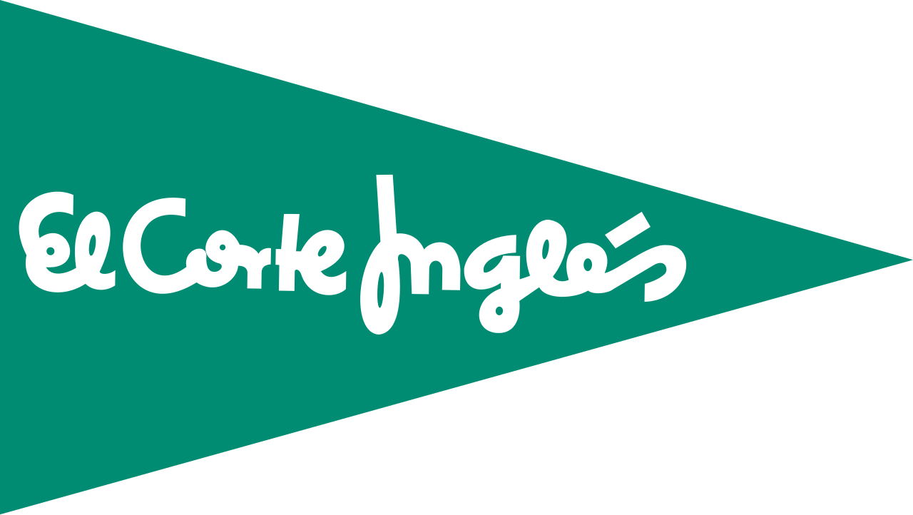

Full Stack Developer & Multicloud
I build cloud applications with Node.js, .NET and Java. I started as a QA Automation Engineer, so testing and CI/CD pipelines are part of how I design software.

Experience on projects for El Corte Inglés, Mango and Simpleat.
"He caught critical regressions in the El Corte Inglés services before they reached production. He designed the API suites that are still in use today."
I'm a Full Stack Developer with a cloud focus. I build applications with Node.js, C# / .NET and Java on the backend and React and Angular on the frontend. My most ambitious personal project, F.R.I.D.A.Y-bot, is a self-hosted AI assistant with a hexagonal architecture, deployed on Oracle Cloud with a CI/CD pipeline.
I started as a QA Automation Engineer on enterprise projects for El Corte Inglés and Mango, working with Karate DSL, Gatling, JMeter and Jenkins. That experience shaped how I work: test early, automate the pipeline and keep the architecture clean.
I'm currently doing the Master in Full Stack & Cloud at Tajamar Tech and preparing the AWS, Azure and Power Platform certifications. Available from summer 2027 and open to international relocation.
Tantin Solutions · Madrid
Tantin Solutions · Madrid
Club Voleibol Aranjuez · Madrid (Volunteer)
Madrid Volleyball Federation · Madrid
Backend
Frontend
Cloud & DevOps
AI & Security
Testing & QA
Languages
AI · Cloud · In development
Self-hosted personal AI assistant controlled through WhatsApp and deployed on Oracle Cloud. Multi-provider LLM tool calling (Groq, OpenAI, Ollama), hybrid RAG and MCP servers on a hexagonal architecture. GitHub Actions CI/CD pipeline with automated quality gates.
Multiplayer Game · WebSockets
Real-time multiplayer web game where players try to type the same word. Rooms and rounds over WebSockets (Socket.io), JWT authentication and near-match detection with Levenshtein distance. React 19 frontend, deployed with Docker Compose and Nginx.
SaaS · Digital Menus · QR
SaaS platform for digital menus and QR ordering for restaurants. Decoupled architecture with E2E suites (Playwright + Cucumber BDD), API tests (Karate) and transactional load tests (Gatling), orchestrated from GitHub Actions.
SaaS · Quality Analysis
Modular software quality analysis platform built with Clean Architecture. Spring Modulith backend with PostgreSQL, Angular 20 frontend, containerized with Docker.
E-commerce · Sportswear
Web infrastructure and online catalog for a sportswear and football jersey brand. Product design, digital inventory management and conversion optimization.
Tajamar Tech · Madrid · In progress
814-hour specialization in C#, ASP.NET Core, EF Core, Angular, React, Docker, Kubernetes and Microsoft Azure and AWS architectures. Completion: June 2027.
IES Domenico Scarlatti · Aranjuez, Madrid
Relational database design, frontend/backend web development, version control (Git) and agile methodologies.